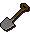

")
Der Feldstecher
Einführung | Lage | Voraussetzungen | Empfohlene Ausrüstung
Samen ernten | Belohnungen | Entwicklung
Samen ernten | Belohnungen | Entwicklung
Nur RuneScape-Mitglieder können 'Der Feldstecher' spielen. Bitte werdet Mitglied, damit ihr auf dieses Feature zugreifen könnt.
Bitte beachtet, dass dies ein 'sicheres' Minispiel ist. Ihr könnt dabei nicht sterben, außer ihr wurdet vergiftet.
Einführung

Lage
![[Bild]](../../img/main/kbase/npc/misc/farming_leprechaun.gif) Falls Sie dem alten Bauer Blinkin helfen möchten, müssen sich sich nur mit Gerd Geräteschuppen an irgendeiner Landwirtschaftsparzelle unterhalten. Er wird euch gerne zum Bauernhof teleportieren, sodass ihr mit dem Minispiel anfangen könnt.
Falls Sie dem alten Bauer Blinkin helfen möchten, müssen sich sich nur mit Gerd Geräteschuppen an irgendeiner Landwirtschaftsparzelle unterhalten. Er wird euch gerne zum Bauernhof teleportieren, sodass ihr mit dem Minispiel anfangen könnt. Den Bauernhof könnt ihr jederzeit wieder verlassen, indem ihr durch das Portal schreitet, welches euch zurück zu der Parzelle bringt, an der ihr Gerd angesprochen hattet. Dieses Portal befindet sich nordöstlich des Bauernhofs.
Voraussetzungen
Falls ihr euch ein Fläschchen Superdünger im Belohnungsladen kaufen möchtet, müsst ihr das Abenteuer 'Garten der Stille' abgeschlossen haben.
Ihr benötigt nur wenige Gegenstände, um an diesem Minispiel teilzunehmen. Ein Spaten und ein paar Goldmünzen sollten ausreichen. Ogelwurzeln findet ihr im Verlauf des Spiels.
Anmerkung: Ihr dürft keine Vertrauten oder Beschwörungsbeutel mit zum Bauernhof bringen.
Gegenstand |
Verwendung |
| Spaten | Ihr benötigt einen Spaten, um Löcher zu graben. Falls ihr vergessen solltet, einen mitzubringen, wird euch Frau Winkin für 5 Goldmünzen gerne einen überlassen. |
![[Bild]](../../img/main/kbase/minigames/vinesweeper/rabbit_flag.gif) Flaggen Flaggen |
Mit Flaggen werden Felder gekennzeichnet, unter denen ihr einen Samen vermutet. Den ersten Satz Flaggen erhaltet ihr kostenlos. Weitere Flaggen könnt ihr für 500 Goldmünzen das Stück bei Frau Winkin erstehen. Ihr könnt auch eure Belohnungspunkte im Laden von Frau Winkin gegen Flaggen eintauschen. Ihr könnt immer nur 10 Flaggen gleichzeitig besitzen. |
![[Bild]](../../img/main/kbase/minigames/vinesweeper/rabbit_root.gif) Ogelwurzel Ogelwurzel |
Beim Graben auf Winkins Bauernhof findet ihr machmal eine Ogelwurzel. Diese könnt ihr Bauer Blinkin auch abkaufen. Die magischen Schrumpfeigenschaften dieses Gemüses erlauben es euch, diese elenden Hasen loszuwerden. |
Samen ernten
Nachdem ihr an Winkins Bauernhof angekommen seid, findet ihr euch auf einem großen Feld wieder, in dessen Mitte der Bauernhof steht. Ihr solltet euch zuerst mit eurer Aufgabe vertraut machen. Lest dazu die Schilder oder unterhaltet euch mit Bauer Blinkin.
Jetzt benötigt ihr natürlich ein paar Flaggen, die ihr bei Bauer Blinkin oder bei Frau Winkin erhalten könnt. Diese Flaggen werden benutzt, um ein Feld zu markieren, unter dem ihr einen Samen vermutet. Ihr könnt immer nur 10 Flaggen gleichzeitig besitzen. Die ersten 10 Flaggen sind kostenlos. Falls ihr eine Flagge in einem richtigen Feld platziert, erhaltet ihr die Flagge bei Bauer Blinkin oder Frau Winkin kostenlos zurück. Falls ihr aber einen Fehler macht oder ein Hase den Samen frisst, verliert ihr die Flagge und müsst für 500 Goldmünzen das Stück neue kaufen. Wenn ihr das Minispiel-Gebiet verlasst und noch Flaggen übrig habt, erinnert sich Bauer Blinkin daran, wie viele ihr hattet, und gibt sie euch beim nächsten Mal zurück. Im Austausch für eure Ogelwurzeln gibt er euch Geld.
Mit euren Flaggen und eurem Spaten könnt ihr dann anfangen zu spielen. Hüpft über ein Trittbrett auf das große Feld voller Landwirte und Hasen. Danach müsst ihr nur noch ein Loch zum Graben auswählen.
Falls sich unter dem Loch, das ihr grabt, kein Samen befindet, werden alle anliegenden Löcher entfernt.
Falls sich in einem der anliegenden Löcher ein Samen befinden sollte, erscheint eine Zahl darüber. Diese Zahl zeigt euch an, in wie vielen der anliegenden Löcher sich ein Samen befindet. Je mehr Zahlen erscheinen, desto einfacher könnt ihr herausfinden, in welchem Loch sich tatsächlich ein Samen befindet. Auf diesem Feld müsst ihr dann eine Flagge platzieren.

|

|
![[Bild]](../../img/main/kbase/minigames/vinesweeper/farmer.gif) Wenn ihr eine Flagge setzt, werden sowohl die Bauern als auch die Hasen von ihr angezogen. Ihr müsst das so regeln, dass der Bauer die Flagge zuerst erreicht. Wenn der Farmer unter der Flagge einen Samen findet, erhaltet ihr dafür Punkte. Die Anzahl der Punkte hängt von eurer Stufe in Landwirtschaft ab. Andere Spieler, die sich in der Nähe befinden und bei der Suche helfen, erhalten ebenfalls Punkte. Der Bauer behält die Flagge, ihr könnt sie aber bei Bauer Blinkin wieder abholen, da ihr ja richtig gelegen habt. Eure Gesamtpunktzahl wird in der rechten oberen Ecke des Spielfensters angezeigt.
Wenn ihr eine Flagge setzt, werden sowohl die Bauern als auch die Hasen von ihr angezogen. Ihr müsst das so regeln, dass der Bauer die Flagge zuerst erreicht. Wenn der Farmer unter der Flagge einen Samen findet, erhaltet ihr dafür Punkte. Die Anzahl der Punkte hängt von eurer Stufe in Landwirtschaft ab. Andere Spieler, die sich in der Nähe befinden und bei der Suche helfen, erhalten ebenfalls Punkte. Der Bauer behält die Flagge, ihr könnt sie aber bei Bauer Blinkin wieder abholen, da ihr ja richtig gelegen habt. Eure Gesamtpunktzahl wird in der rechten oberen Ecke des Spielfensters angezeigt. Falls ein Hase es zuerst zur Flagge schafft, frisst er den Gegenstand, der sich in dem Loch befindet und ihr verliert eure Fahne. Falls ihr die Flagge ersetzen möchtet, müsst ihr Bauer Blinkin eine neue für 500 Goldmünzen abkaufen. Das passiert auch, wenn sich in dem Loch unter der Flagge kein Samen befindet, nachdem der Bauer das Loch ausgräbt. Wenn sich ein Hase der Flagge nähert, müsst ihr nur eine Ogelwurzel mit ihm benutzen. Der Hase schrumpft dann und läuft davon. Eure Flagge ist dann sicher und ihr erhaltet sogar 30 EP in Jagen.
Falls das Loch, das ihr grabt, einen Samen enthält, wird dieser leider zerstört. Einer der Bauern kommt dann vorbei und räumt auf. Leider verliert ihr dann ein paar Punkte und alle Zahlen innerhalb von 3 Feldern verschwinden.
Falls ihr euch nicht ganz sicher seid, ob sich in einem Loch ein Samen befindet, solltet ihr es rechtsklicken und 'Betrachten' auswählen. Das funktioniert zwar nicht immer, aber meistens könnt ihr somit sichergehen, ob sich in dem Loch ein Samen befindet, bevor ihr eure Flagge platziert. Das Betrachten dauert etwas länger, aber es ist eine gute Möglichkeit, euch bei eurer Entscheidung etwas zu helfen.
Für jedes leere Loch und richtig gesetzte Flagge erhaltet ihr Punkte. Ihr erhaltet ebenfalls Punkte, wenn sich in eurer Nähe ein anderer Spieler aufhält und ein Bauer einen Samen unter seiner Flagge findet. Ihr müsst dazu allerdings aktiv sein. Wenn ihr nicht mitspielt, erhaltet ihr auch keine Punkte. Ihr verliert Punkte, wenn ihr versehentlich einen Samen ausgrabt. Ihr müsst zusammenarbeiten, um Punkte zu erzielen. Auf Winkins Bauernhof werden Faulenzer nicht belohnt!
Belohnungen
Punkte bedeuten immer nur eins: Belohnungen! Sobald ihr euch im Minispiel ausgetobt und Bauer Blinkin so gut es geht geholfen habt, solltet ihr über das Trittbrett zum Bauernhof zurückkehren und mit Frau Winkin sprechen. Sie besitzt einen Laden, in dem ihr eure Punkte gegen Belohnungen eintauschen könnt. Dazu gehören verschiedene Samen, wie beispielsweise Tomaten-Samen, die 10 Punkte kosten, bis hin zu Samen des Seins, die allerdings 55.000 Punkte kosten. Sie verkauft außerdem Flaggen (50 Punkte pro Flagge) und wenn ihr das Abenteuer 'Garten der Stille' abgeschlossen habt, dürft ihr hier auch Superkompost (5.000 Punkte) kaufen. Ihr könnt eure Punkte auch gegen EP in Landwirtschaft eintauschen.
Nach einem harten Tag Arbeit und dem bevorstehenden Sonnenuntergang auf Winkins Bauernhof, müsst ihr euch nur zum Portal nordöstlich des Bauernhofs begeben, um das Gebiet zu verlassen. Alle Punkte, die ihr noch nicht ausgegeben habt, werden gespeichert und ihr findet euch dann an der Parzelle wieder, an der ihr zuvor Gerd angesprochen hattet.
Entwicklung
Entwicklung: Danny J
Grafik: Hayo K, Jeff K
Qualitätssicherung: Chris L
Audio: Adam B

Weitere Artikel in Minispiele
|
|
|
Weiterführende Informationen Wenn euch dieser Artikel nicht weitergeholfen hat, könnt ihr in den folgenden Kapiteln der RuneScape-Webseite mehr Informationen finden:
|
|